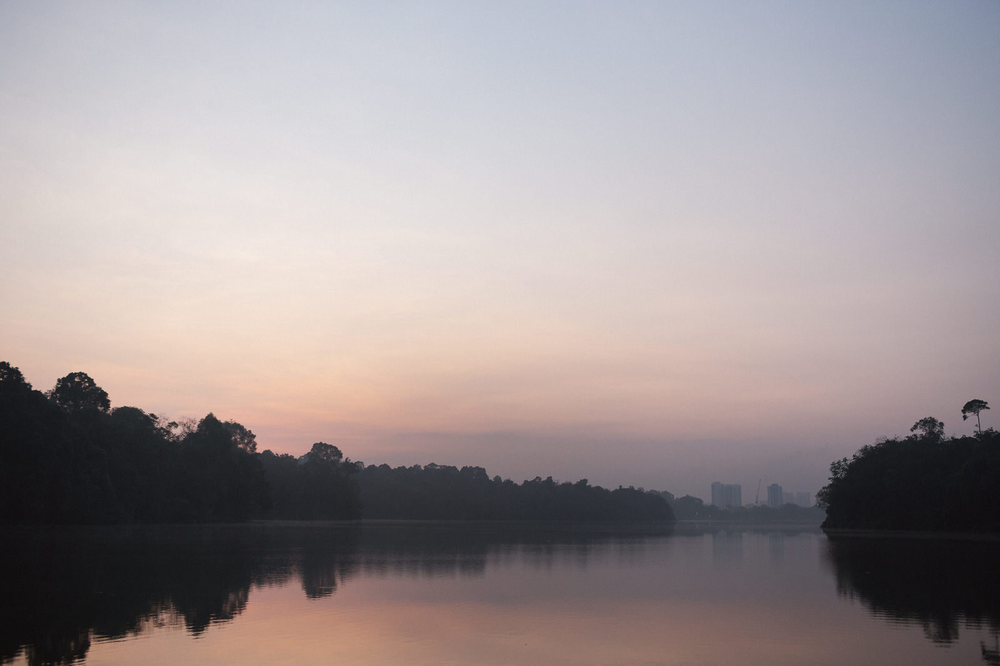
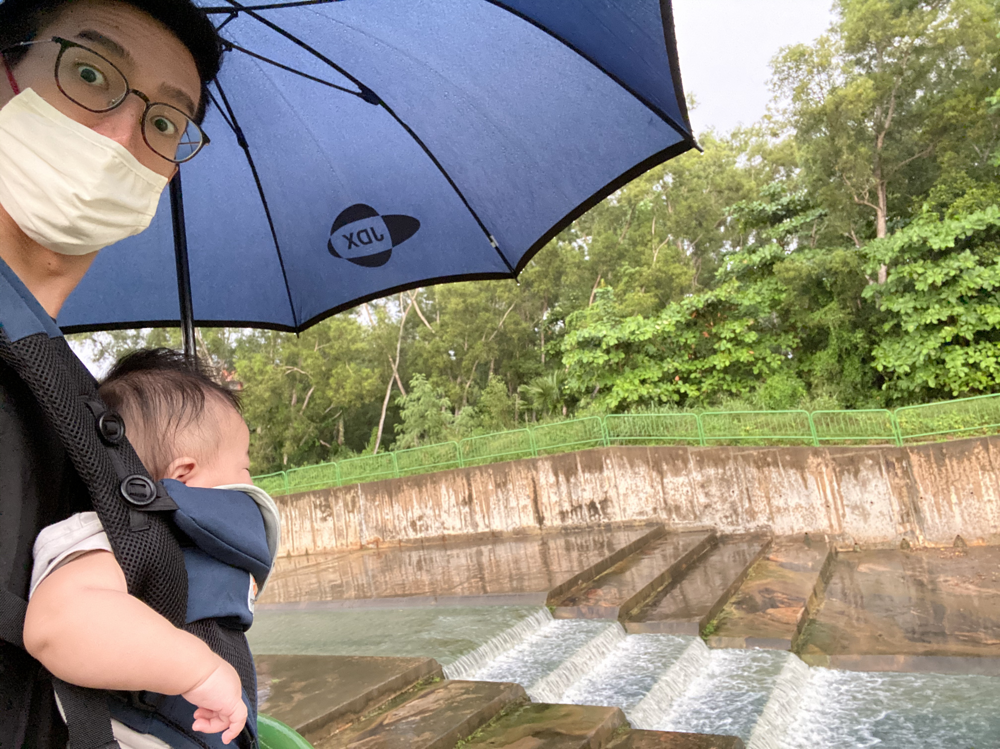
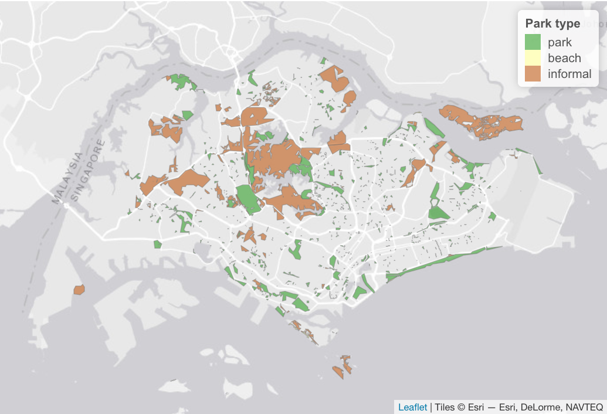
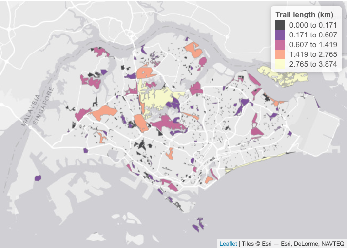
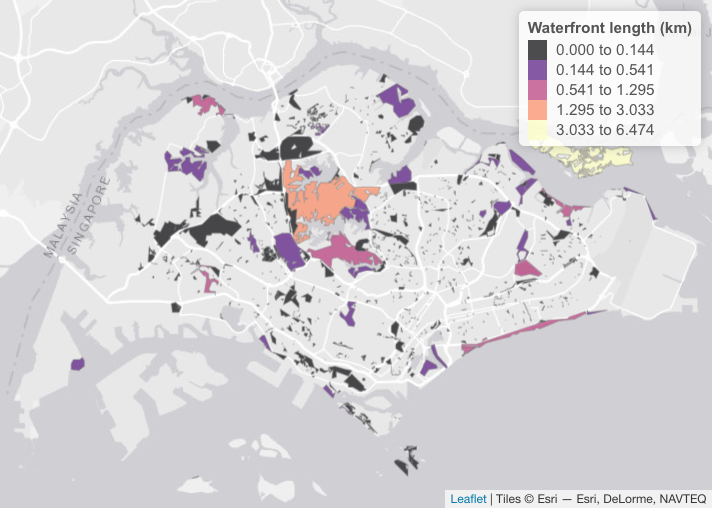
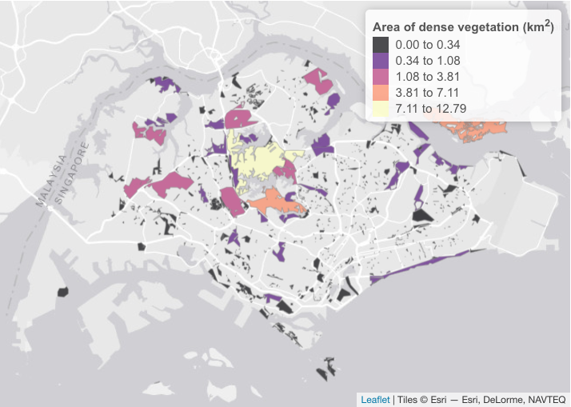
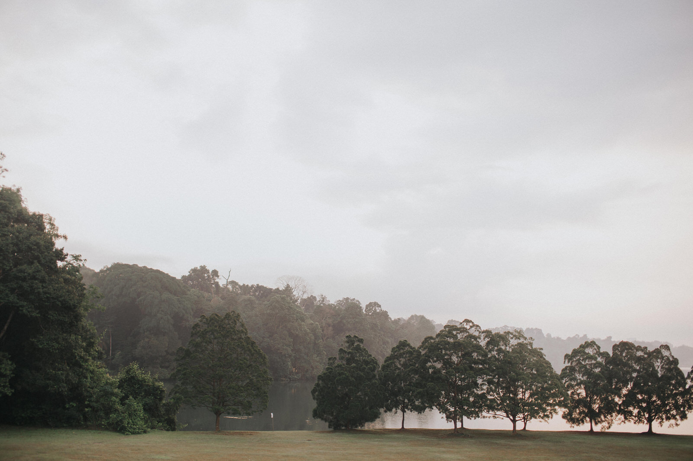
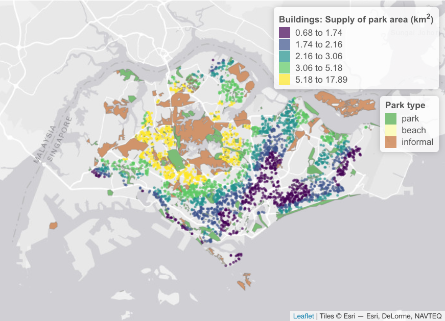
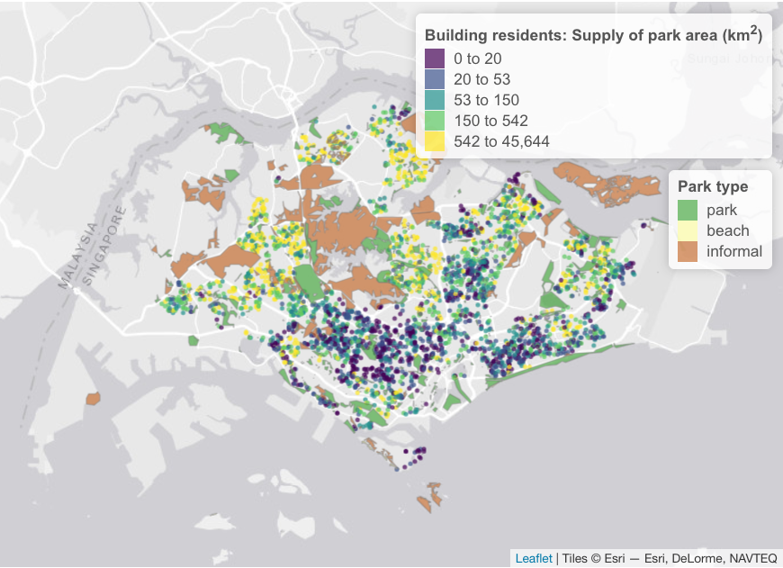

The COVID-19 pandemic is changing the way we work and play1. As more people work remotely from home, visits to local parks have surged as people look for ways to stay active, find solace and quench their thirst for adventure2. Such opportunities for leisure and recreation play an important part in people’s physical and psychological well-being3.

Not all parks are created equal. For example, people seeking solace may be drawn to waterfront or nature parks with open or tranquil landscapes4. For others who love adventure (like myself), bike trails are great to break a sweat while having fun with friends. But most of the bike trails in Singapore5 are really hard to get to from where I live (not to mention figuring out bike transport). So, instead of heading out for some adventure, I tend to visit the open field and playground closest to home, going out for short walks with my son (still waiting for my next adrenaline fix!).


In city planning, park provision is typically measured by summarising the park area within a given region6. Beyond the area of parks, however, there is a need to characterise the wide variety of parks that serve different groups of people. Understanding such nuances in park access can benefit both residents and city planners, for instance, when considering the location of a new home, or when planning for new parks in the city.

Our new R package home2park provides ways to measure a variety of park features related to recreation such as foot/cycle trails, waterfronts, forests, open spaces, playgrounds and sport/fitness amenities. It includes functions to download such data from OSM. Alternatively, you may supply your own proprietary datasets, or use new data for the purpose of future scenario planning. Summarising these features at each park allows us to make quantitative comparisons between parks. Some examples are shown below for the city of Singapore, based on OSM data in the year 2020. For instance, parks with extensive trails provide opportunities for running/wheeled sports:

Other features such as water and vegetation are associated with visual relief, as well as restorative effects on people’s psychological well-being7. If such data (e.g., satellite imagery) are available, they can also be summarised at each park:



To calculate the ‘supply’ of these parks features to homes city-wide, these summarised values per park can then be assigned to each residential building. Since people are less likely to visit parks further away from their homes, a ‘distance decay’ parameter can be included. This reduces the supply value originating from parks further away. The ‘distance decay’ for walking to urban parks was empirically determined in Tu et al.8 to fit a negative exponential curve with a coefficient c value of 0.661 (see home2park package for details). The example below shows the supply of park area to residential buildings in Singapore.

Notice how the largest parks in Singapore tend to be centrally located, especially since we include informal nature areas (e.g., Central Catchment Nature Reserve). Buildings closer to these huge parks would thus have a much larger ‘supply’ of park area. However, each of the residential buildings would have different numbers of people living in them. A large park next to high-rise apartments would benefit a lot more people compared to low-rise housing. If we take into account the number of residents living within each building, a very different picture emerges!

These building-level metrics can subsequently be summarised across larger regions, for example, based on zones used in city planning. Not surprisingly, the supply metric for park area derived from individual buildings is vastly different from conventional metrics used today (examples in Tan and Samsudin9). Feel free to explore these metrics for the provision of park area in the interactive map below.
In these unprecedented times, significant changes to human mobility and working environments will require us to rethink land use distribution in the city, particularly for office, residential and public spaces such as parks. Some evidence also point to shifting preferences, for example, toward wilder green areas10. These issues are starting to become a part of the national conversation in Singapore 11, which is important considering that the city has major plans for sustainable development and greening over the next decade12. As part of the Singapore Green Plan 2030, there will be 1,000 ha (more than 1,800 football fields!) more parks and park connectors, and every household will live just a 10-minute walk away from a park13. In view of these major plans, there is a need to move beyond basic summaries of area, and consider the variety of parks features that are important for outdoor recreation. The R package home2park represents a part of our effort to contribute to a more nuanced understanding of outdoor recreation and its spatial provision in cities. Note that the package is still experimental, so do reach out if you would like to contribute to improvements, or to report any bugs.
Acknowledgements
I’d like to gratefully acknowledge Kwek Yan for his valuable inputs and help to re-fine these ideas we are working on here, as well as Edwin Tan and Justin Nai for the useful discussions. The analyses shown in this blog post is part of a larger project that investigates the balance of park supply and demand in cities between different groups of people, as well as how the ‘distance decay’ affects their use. Do reach out if you are keen to collaborate on related topics. Finally, to cite home2park or acknowledge its use, you may use the following reference:
Song, X. P., Chong, K. Y. (2021). home2park: An R package to assess the spatial provision of urban parks. Journal of Open Source Software, 6(65), 3609. https://doi.org/10.21105/joss.03609
This post is also shared on R-bloggers.com.
Footnotes
Hoffower, H. (2021, June 23). Tech legend Marc Andreessen says the rise of remote work might be more important than the internet: ‘A permanent civilizational shift’. Business Insider.↩︎
Geng, D. C., Innes, J., Wu, W., & Wang, G. (2021). Impacts of COVID-19 pandemic on urban park visitation: a global analysis. Journal of forestry research, 32(2), 553-567.
Ting, W. P. (2020, November 1). Hiking boom in Singapore as more turn to their backyard to cope with Covid-19 travel restrictions. Today. https://www.todayonline.com
Nadarajan, R. (2020, April 2). Covid-19: Seeking fun and solace from worries in wide open spaces, Singaporeans turn to the outdoors. Today.↩︎Wood, L., Hooper, P., Foster, S., & Bull, F. (2017). Public green spaces and positive mental health–investigating the relationship between access, quantity and types of parks and mental wellbeing. Health & place, 48, 63-71.
Rajoo, K. S., Karam, D. S., & Abdullah, M. Z. (2020). The physiological and psychosocial effects of forest therapy: A systematic review. Urban Forestry & Urban Greening, 126744.↩︎Examples in Singapore include East Coast Park, Upper Peirce Reservoir, Bukit Batok Nature Park↩︎
http://shimanocyclingworld.com/5-best-mountain-bike-trails-in-singapore/↩︎
Tan, P. Y., & Samsudin, R. (2017). Effects of spatial scale on assessment of spatial equity of urban park provision. Landscape and Urban Planning, 158, 139-154.↩︎
Wood, L., Hooper, P., Foster, S., & Bull, F. (2017). Public green spaces and positive mental health–investigating the relationship between access, quantity and types of parks and mental wellbeing. Health & place, 48, 63-71.
Rajoo, K. S., Karam, D. S., & Abdullah, M. Z. (2020). The physiological and psychosocial effects of forest therapy: A systematic review. Urban Forestry & Urban Greening, 126744.↩︎Tu, X., Huang, G., Wu, J., & Guo, X. (2020). How do travel distance and park size influence urban park visits?. Urban Forestry & Urban Greening, 52, 126689.↩︎
Tan, P. Y., & Samsudin, R. (2017). Effects of spatial scale on assessment of spatial equity of urban park provision. Landscape and Urban Planning, 158, 139-154.↩︎
Grzyb, T., Kulczyk, S., Derek, M., & Woźniak, E. (2021). Using social media to assess recreation across urban green spaces in times of abrupt change. Ecosystem Services, 49, 101297.↩︎
Ng, K. G. (2021, June 23). Understand quality, not just quantity, of green spaces:Expert. The Straits Times.↩︎
Tan, A. (2021, February 10). Singapore Green Plan 2030 to change the way people live, work, study and play. The Straits Times.
Lin, C. (2021, March 4). NParks to develop Singapore’s longest cross-island trail and 3 new recreational routes. Channel News Asia.↩︎Au-Yong, R. (2019, March 28). Singapore to have 1,000ha more parks and park connectors. The Straits Times.
Singapore Green Plan 2030 (2021). City in Nature.↩︎
Citation
@article{x._p.2021,
author = {X. P. , Song and K. Y. , Chong},
title = {Home2park: {An} {R} Package to Assess the Spatial Provision
of Urban Parks},
journal = {Journal of Open Source Software},
volume = {6},
number = {66},
pages = {3609},
date = {2021},
url = {https://xpsong.com/posts/home2park/},
doi = {10.21105/joss.03609},
langid = {en}
}